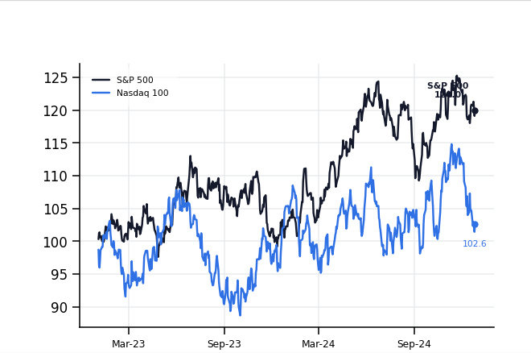
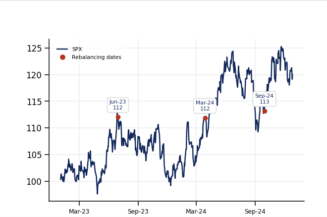
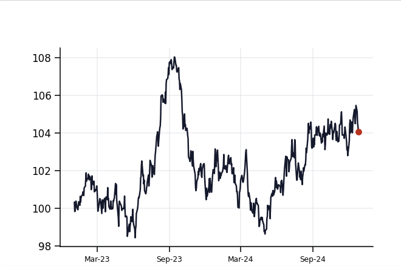
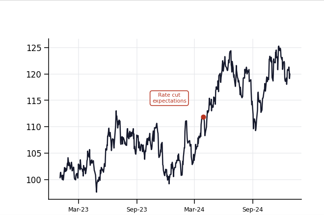
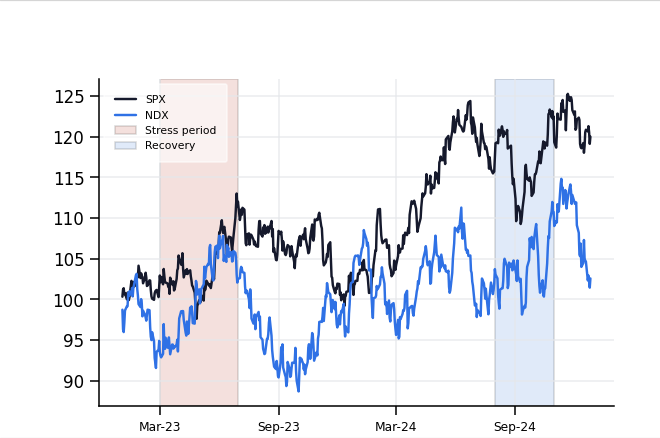
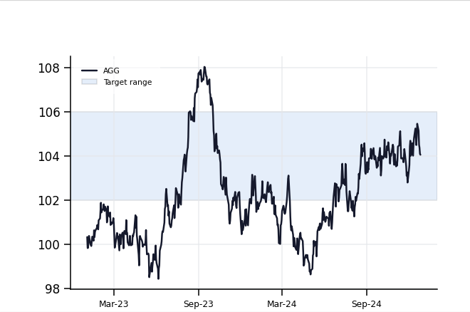

Annotations: tags, dots and shaded regions¶
Annotations add emphasis and explanation on top of a chart. There are two ways to use them:
- Declared inside a series (
tagsingraph_line,tagingraph_bar,graph_box_whiskersandgraph_dist). The y-value is looked up for you: this is the recommended way for "last value", "peak" or "a given date". - Free-standing methods (
tag(),dot(),shade_x(),shade_y()) when you know the exact coordinates.
import numpy as np
import pandas as pd
import helpers_ps as hp
hp.set_graph_theme()
rng = np.random.default_rng(42)
dates = pd.bdate_range("2023-01-02", periods=520)
rets = rng.normal([0.0004, 0.0006, 0.0002], [0.009, 0.013, 0.004], size=(len(dates), 3))
prices = pd.DataFrame(
100 * np.exp(rets.cumsum(axis=0)),
index=dates,
columns=["SPX", "NDX", "AGG"],
)
Tags declared inside a line series¶
In graph_line, each series accepts a tags list. Each item is one group of annotations:
| Key | Default | Description |
|---|---|---|
x_values |
required | "last", one x value or a list of x values (dates as strings or Timestamp, numbers, categories). |
show |
"tag_dot" |
"tag" (text only), "dot" (marker only) or "tag_dot". |
template |
"{ticker}\n{x_value:%b-%Y}: {y_value:,.2f}" |
Text, formatted with {ticker}, {label}, {x_value}, {y_value}. |
tag |
{} |
Style of the text: arguments of tag() (ubic_etq, fontsize, fontweight, font_color, bg_color, edge_color, show_bbox...). font_color defaults to the series color. |
dot |
{} |
Style of the marker: arguments of dot() (color, size, zorder...). color defaults to the series color. |
legend_label |
None |
Adds a legend entry for the markers. |
Last value¶
g = (
hp.GraphMtplt(prices)
.graph_line(series=[
{
"ticker": "SPX",
"label": "S&P 500",
"tags": [{
"x_values": "last",
"template": "{label}\n{y_value:,.1f}",
"tag": {"ubic_etq": (-22, 16), "fontweight": "bold"},
}],
},
{
"ticker": "NDX",
"label": "Nasdaq 100",
"tags": [{
"x_values": "last",
"template": "{y_value:,.1f}",
"tag": {"ubic_etq": (0, -16)},
}],
},
])
.add_legend()
)

Several points, with a legend entry¶
The y-values of the dates are read from the DataFrame. Pass pd.Timestamp objects when the template formats the date ({x_value:%b-%y}); a date string works to locate the point, but it stays a string and cannot be formatted as a date.
g = (
hp.GraphMtplt(prices)
.graph_line(series=[
{
"ticker": "SPX",
"color": "#12275A",
"tags": [
{
"x_values": [pd.Timestamp("2023-06-30"), pd.Timestamp("2024-03-28"), pd.Timestamp("2024-09-30")],
"show": "tag_dot",
"template": "{x_value:%b-%y}\n{y_value:,.0f}",
"dot": {"color": "#B7331F", "size": 40, "zorder": 8},
"tag": {"ubic_etq": (0, 16), "bg_color": "white", "edge_color": "#D9D9D9", "show_bbox": True},
"legend_label": "Rebalancing dates",
},
],
},
])
.add_legend()
)

Dots only¶
g = (
hp.GraphMtplt(prices)
.graph_line(series=[
{"ticker": "AGG", "tags": [{"x_values": "last", "show": "dot", "dot": {"size": 50, "color": "#B7331F"}}]},
])
)

Tags in other charts
Bars: tag (value labels, centered tags, stack totals). Boxes: tag (last observation, statistics). Distributions: tag (last value, percentiles, literal values).
tag()¶
Writes a text at the coordinate (x_value, y_value), optionally inside a rounded box.
| Parameter | Default | Description |
|---|---|---|
x_value, y_value |
required | Coordinate. For date axes pass a date (string or Timestamp); for bar charts with categories pass the position 0, 1, 2.... |
label |
required | Text (\n for line breaks). |
ubic_etq |
(0, 17) |
Offset (dx, dy) in points from the coordinate. |
label_h_align, label_v_align |
"center", "center" |
Alignment relative to the anchor. |
fontsize, fontweight, font_color |
7, "normal", "black" |
Text style. |
show_bbox |
False |
Draw a rounded box behind the text. |
bg_color, bg_alpha, edge_color |
"#ECEFF1", 1.0, "none" |
Box style. |
text_edge_color, text_edge_width |
None, 0.0 |
Outline around the letters (readability on busy charts). |
zorder |
6 |
Drawing order. |
g = (
hp.GraphMtplt(prices)
.graph_line(series=[{"ticker": "SPX"}])
.tag(
x_value="2024-03-28",
y_value=prices.loc["2024-03-28", "SPX"],
label="Rate cut\nexpectations",
ubic_etq=(-45, 25),
show_bbox=True,
bg_color="white",
edge_color="#B7331F",
font_color="#B7331F",
)
.dot(x_value="2024-03-28", y_value=prices.loc["2024-03-28", "SPX"], color="#B7331F", size=45)
)

dot()¶
Draws a marker (a scatter point) at a coordinate.
| Parameter | Default | Description |
|---|---|---|
x_value, y_value |
required | Coordinate. |
color |
"red" |
Fill color (marker_color overrides it). |
size |
30 |
Marker area (points²). markersize sets the diameter instead. |
marker |
"o" |
Matplotlib marker style ("s", "^", "D"...). |
marker_edgecolor, marker_edgewidth |
None, 0.0 |
Edge. |
alpha, zorder, clip_on |
1.0, 5, True |
Opacity, drawing order, clipping. |
label, legend |
None, True |
Legend text; if label is given the dot is added to the legend. |
shade_x(): shaded periods¶
Shades one or more x ranges across the full height of the axis: recessions, rate-hiking cycles, events, investment periods.
periods can be a single (start, end) tuple, a list of tuples, or a list of dictionaries with their own color, alpha, label and hatch.
| Parameter | Default | Description |
|---|---|---|
periods |
required | (start, end), [(start, end), ...] or [{"start", "end", "color", "alpha", "label", "hatch"}, ...]. |
color, alpha |
"#B0B0B0", 0.25 |
Default fill. |
label |
None |
Legend label (shown once). |
hatch |
None |
Hatch pattern, e.g. "//". |
ymin, ymax |
0.0, 1.0 |
Vertical extent, as fractions of the axis. |
zorder |
0 |
Drawing order. |
clip_to_xlim |
True |
Do not extend the axis. |
g = (
hp.GraphMtplt(prices)
.graph_line(series=[{"ticker": "SPX"}, {"ticker": "NDX"}])
.shade_x(
[
{"start": "2023-03-01", "end": "2023-06-30", "color": "#B7331F", "alpha": 0.15, "label": "Stress period"},
{"start": "2024-08-01", "end": "2024-10-31", "color": "#3075DB", "alpha": 0.15, "label": "Recovery"},
]
)
.add_legend()
)

For recessions there is a ready-made helper: add_recessions().
shade_y(): shaded bands¶
Shades a horizontal band between two y values: target ranges, risk zones, valuation bands.
g = (
hp.GraphMtplt(prices)
.graph_line(series=[{"ticker": "AGG"}])
.shade_y((102, 106), color="#3075DB", alpha=0.12, label="Target range")
.add_legend()
)

| Parameter | Default | Description |
|---|---|---|
period |
required | (lower, upper) y values. |
color, alpha, zorder, label, hatch |
as shade_x |
Style. |
xmin, xmax |
0.0, 1.0 |
Horizontal extent, as fractions of the axis. |
clip_to_ylim |
True |
Do not extend the axis. |
Which axis do annotations use?¶
Annotations go to the active subplot (axis(i)) and, for charts with two y axes, the series tags of a "right" series are drawn on the right axis automatically.